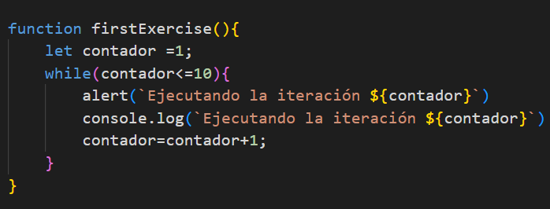

Crea un contador que comience en 1 y vaya hasta 10 usando un bucle 'while'. Muestra cada número.
Crea un contador que comience en 10 y vaya hasta 0 usando un bucle 'while'. Muestra cada número.
Crea un programa de cuenta progresiva. Pide un número y cuenta desde 0 hasta ese número utilizando un bucle 'while' en la consola del navegador.